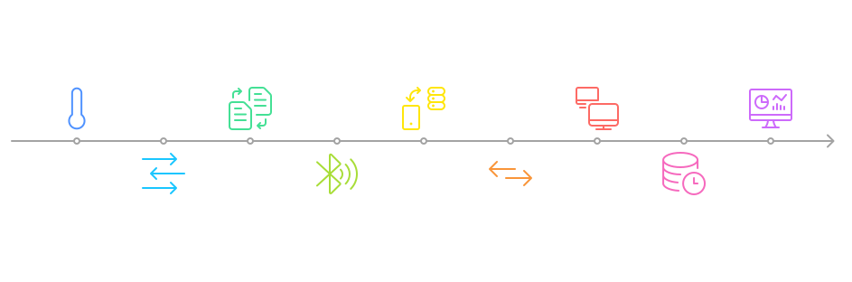
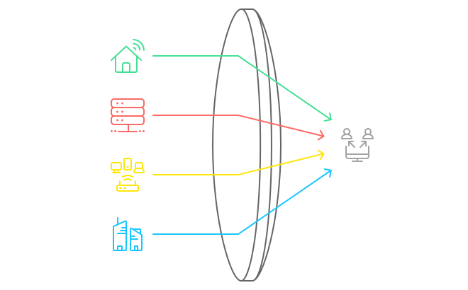
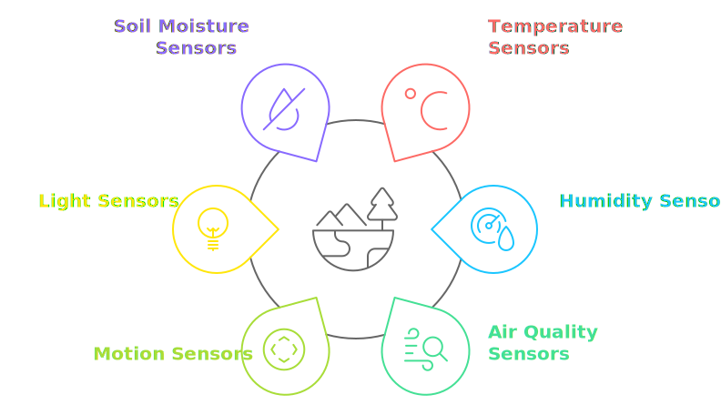
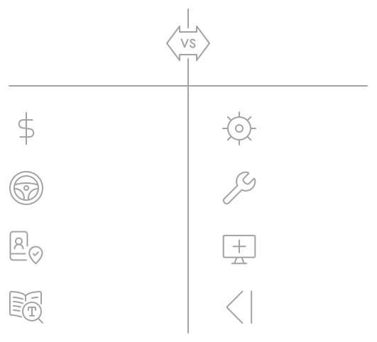

📝 Introduction
The Internet of Things (IoT) market is rapidly expanding, with revenues expected to reach $947.50 billion in 2024 worldwide and projected to grow to $1,560.00 billion by 2029, according to Statista. This growth spans across consumer, industrial, automotive, smart cities, and smart finance sectors, with automotive IoT leading the way.
In the IoT ecosystem, monitoring and dash-boarding are crucial for real-time data visualization, anomaly detection, and proactive maintenance. While numerous commercial solutions exist, building your own monitoring system can offer unique advantages in flexibility, cost-effectiveness, and data privacy.
In this post, I’ll share an open-source solution for IoT monitoring that combines affordable hardware with powerful open-source software to create a robust system. I’ll explain the value of this solution in the context of modern open-source and commercial technology.
🔎 The Solution at a Glance
As everyone liking DIY stuff, I just wanted to use Docker containers for analysing my bedroom’s temperature and humidity 😜. Therefore, I spent a couple of nights crafting firmware, connecting hardware pieces together and learning more on the capabilities of microcontrollers, data communication and time-series databases.
🔄 End to End Data Flow
Our solution uses an ESP32 microcontroller connected to a DHT11 temperature and humidity sensor. The ESP32 runs a MicroPython-based MQTT client that processes sensor data, timestamps it, converts it to JSON format, and transmits it over Wi-Fi using the MQTT protocol. The backend, which can run on a separate device (e.g., Raspberry Pi, cloud instance, or PC), consists of:
- An MQTT broker (Mosquitto) that receives and forwards sensor data
- Telegraf, which collects data from MQTT and stores it in InfluxDB
- InfluxDB, a time-series database optimised for high-performance reads and writes
- Grafana, a visualisation platform for creating customisable real-time dashboards

🎯 Use-Cases
This setup, with small modifications, can be used for various IoT scenarios and beyond, including the monitoring of home environments, servers and infrastructure, home networking monitoring, and more.

Regarding IoT, the solution showcased in the repository can be used off the shelf for temperature and humidity monitoring. However, a more comprehensive environment monitoring can be achieved by adding more sensors like air quality sensors, e.g. the CCS811 sensor that can detect a wide range of VOCs and provide equivalent CO2 (eCO2) readings or the Nova SDS011 which is a very effective particulate sensor that can measure PM2.5 and PM10 concentrations with high precision. A good versatile solution to monitor many environmental variables simultaneously is the BME680 that measures gas, pressure, humidity, and temperature as well as it can detect a broad range of volatile organic compounds (VOCs) in the air, making it useful for indoor air quality monitoring. Furthermore, the codebase is modular and abstracted, allowing developers to easily add more sensors by configuring new MQTT topics and InfluxDB measurements.the demonstrated system’s flexibility allows for an easy integration of various sensors:
- Motion sensors (PIR, ultrasonic)
- Air quality sensors (CO2, VOC, particulate matter)
- Light sensors
- Soil moisture sensors
- Current and voltage sensors

🤔 Why Build Your Own Solution?
Building your own IoT monitoring solution offers a unique set of advantages that can make it an attractive option for many users, particularly those with a technical background or a desire to learn more about IoT architecture.
Cost-effectiveness is a significant benefit of this approach. Most of the hardware components are quite cheap to purchase. There’s an initial investment in components like the ESP32 (approximately $10) and sensors such as the DHT11 (around $3), but these are one-time costs. Unlike commercial solutions that often involve recurring subscription fees, a self-built system can be scaled at minimal additional cost, making it an economical choice in the long run. Perhaps one of the most compelling reasons to build your own solution is the complete control it offers. You have full ownership of your data and can customize the system to meet your specific needs. This flexibility allows you to adapt the solution as your requirements evolve, without being constrained by the limitations of a commercial product or facing vendor lock-in. Privacy and data security are increasingly important considerations in our interconnected world. By keeping your data within your own network and eliminating dependencies on third-party cloud services, you can ensure compliance with data protection regulations and maintain a higher level of privacy. This can be particularly crucial for sensitive applications or in regions with strict data governance laws. Beyond the practical benefits, building your own IoT monitoring system presents an excellent learning opportunity. It allows you to gain a deep understanding of IoT architecture, hands-on experience with modern monitoring tools, and develop valuable technical skills that are increasingly in demand in today’s job market.
However, it’s important to acknowledge that this approach isn’t without its challenges. It requires a certain level of technical knowledge, including basic software engineering skills, understanding of networking concepts, and Linux system administration. You’ll also be responsible for maintaining the system, applying updates, and troubleshooting any issues that arise. Additionally, while the system starts with basic functionality, more advanced features may require custom development.
Despite these considerations, for those with the technical inclination or the willingness to learn, building your own IoT monitoring solution can be a rewarding endeavor. It offers a perfect balance of cost, control, and educational value, making it an attractive option for a wide range of IoT applications.

Alternative Solutions
While building your own IoT monitoring solution offers unique advantages, it’s important to consider other options that might better suit your specific needs or technical expertise. The IoT landscape offers a range of alternatives, from robust open-source platforms to comprehensive commercial solutions.
Open-source alternatives like Home Assistant and ThingsBoard provide powerful, community-driven platforms with extensive features and integrations
On the commercial side, enterprise-grade solutions such as AWS IoT Core and Azure IoT Hub offer scalable, fully-managed services with advanced features like device management, security, and analytics. While these come with associated costs, they can be ideal for businesses requiring high reliability, extensive support, and seamless integration with other cloud services.
Each alternative has its own strengths and trade-offs in terms of cost, ease of use, scalability, and feature set.
💻 Code
The complete source code and setup instructions for this project are available on my GitHub repository 🚀.